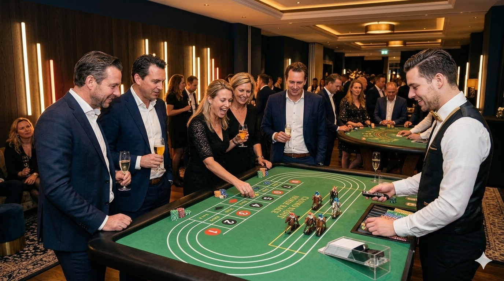

Paardenrennen spelopstelling
Een verzorgde spelopstelling die direct opvalt en goed past binnen een casinohoek of themafeest.
Casino op locatie voor bedrijven en privé-events
Paardenrennen is een origineel casino spel dat direct sfeer en reactie oproept. Gasten volgen samen hun paard, moedigen aan en kunnen laagdrempelig meedoen zonder ingewikkelde spelregels.
Binnen 24 uur reactie • Vrijblijvend voorstel • Geschikt voor zakelijke en privé-events

Paardenrennen op locatie
Paardenrennen is luchtig, herkenbaar en verrassend. Het spel trekt snel publiek omdat gasten samen de race volgen en reageren op wat er gebeurt. Daardoor ontstaat er veel interactie rond de tafel, zonder dat gasten lang uitleg nodig hebben.
Dit maakt Paardenrennen geschikt voor bedrijfsfeesten, personeelsfeesten, borrels, bruiloften, themafeesten en complete casinoavonden. Je kunt het spel los boeken als speelse attractie of combineren met roulette, blackjack of Rad van Fortuin voor meer variatie.
Compleet verzorgd
Een verzorgde spelopstelling die direct opvalt en goed past binnen een casinohoek of themafeest.
Inclusief de benodigde paardenrennen-materialen, fiches of speeldollars en duidelijke speluitleg.
Een begeleider legt het spel uit, houdt het tempo erin en zorgt dat gasten makkelijk kunnen aansluiten.
Gasten kijken mee, moedigen aan en reageren samen op de race. Dat maakt het spel ideaal als sociaal showelement.
Laagdrempelig entertainment
Paardenrennen is juist sterk omdat het eenvoudig te volgen is. De spelbegeleider legt kort uit hoe gasten kunnen meedoen en zorgt dat het spel vlot blijft verlopen. Er wordt gespeeld voor de beleving, met fiches of speeldollars, niet met echt geld.
Geschikt voor
Richtprijs
Voor Paardenrennen kun je rekening houden met een prijs vanaf €395 inclusief croupier of spelbegeleiding, spelmaterialen en tot 4 uur spelen, exclusief btw en eventuele transportkosten. Extra uur: €100. De exacte prijs hangt af van locatie en wensen.
Combinatietips
Paardenrennen werkt goed als luchtig onderdeel naast herkenbare casinospellen. Zo blijft de avond afwisselend voor gasten die kort willen meedoen én voor gasten die langer aan tafel blijven.
Praktische antwoorden
Paardenrennen is een interactief spel waarbij gasten samen een race volgen. Het is eenvoudig te begrijpen en zorgt voor veel reactie rond de tafel.
Ja. Het spel werkt goed voor bedrijfsfeesten en borrels omdat collega’s makkelijk kunnen aansluiten, meekijken en elkaar aanmoedigen.
Ja, Paardenrennen wordt geleverd met croupier of spelbegeleiding, zodat gasten snel begrijpen hoe het werkt.
Ja. Paardenrennen combineert goed met roulette, blackjack, poker of Rad van Fortuin voor een complete casino-opstelling.
Paardenrennen is beschikbaar vanaf €395 inclusief begeleiding, spelmaterialen en tot 4 uur spelen, exclusief btw en eventuele transportkosten. Extra uur: €100.
Vrijblijvend voorstel
Wil je weten hoe Paardenrennen past binnen jouw feest, borrel of complete casinoavond? Vraag vrijblijvend een voorstel aan. We denken graag mee over de juiste combinatie van spellen en begeleiding.